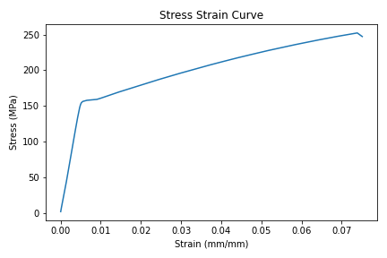
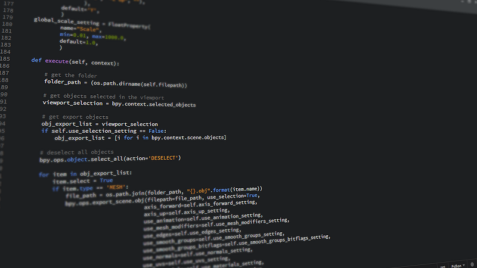
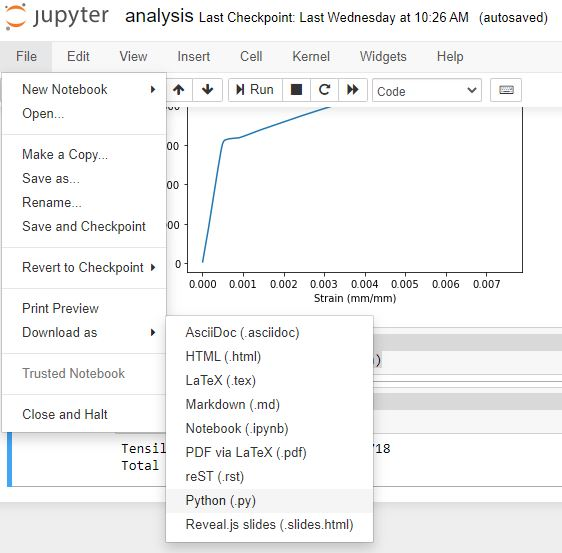

In a previous blog post, I wrote about how to incorporate a few software design principals into the code written by scientists. This post is a follow up on one specific software design principle that can be used by scientists: testing
Below are some practical ideas about how to incorporate software tests into code written by scientists for data analysis and plotting. Keep in mind the steps and tests below don't correspond to every piece of scientific code. My ideas are not designed to revolutionize the ways scientists write code, or fix reproducibility problems in published scientific research, or be a strict TDD (Test-Driven Development) framework for scientific code. The ideas below are some things I came up with that I wanted to share. I hope this post is helpful and starts a few conversations about testing in scientific software.
OK - with that disclaimer out of the way, let's get started.
A sample notebook
The example scientific code we will be working with in this post is made up of one long script. In the rest of this post, we are going to work on adding tests to this scientific script.
Very often, scientific code includes a couple of common steps:
- Read in data
- Clean or reorganize data
- Run calculations on the data
- Create a figure or plot
Below is a sample Jupyter notebook (that we'll use in the rest of this post) with Python code that reads in a .csv file of data, cleans up the data, runs a calculation, then produces a plot. The data in this example is from a mechanical test frame (a piece of equipment that tests the strength of materials), but the same testing ideas in this post could be applied to a script that analyzes data in another subject area. You can find the Jupyter notebook here: analysis.ipynb and the raw data here: raw_data.csv
# analysis.ipynb
import numpy as np
import pandas as pd
import matplotlib.pyplot as plt
raw_data_df = pd.read_csv('data/raw_data.csv')
raw_data_array = np.array(raw_data_df)
cleaned_data_array = raw_data_array[1:,:]
d = 0.506
A0 = np.pi*(d/2)**2
F = cleaned_data_array[:,4] * 0.001
stress = F/A0
strain = cleaned_data_array[:,5] * 0.01
ts = np.max(stress)
te = np.max(strain)-np.min(strain)
print(f'Tensile Strength={ts}')
print(f'Total Extension={te}')
fig, ax = plt.subplots()
ax.plot(strain,stress)
ax.set_xlabel("Strain (mm/mm)")
ax.set_ylabel("Stress (MPa)")
ax.set_title("Stress Strain Curve")
plt.savefig("plot.png")
plt.show()
When the code is run, the plot produced looks like the plot below:

In the code above, notice the line raw_data_df = pd.read_csv('data/raw_data.csv') This line shows the .csv data file isn't in the same directory as the script. The .csv file is in a sub-directory called data/.
In scientific code, it's a good idea to keep the data separate from the script that analyzes the data.
How can we possibly write software tests for this script?
Testing in Scientific Software is about Reproducibility
The first idea isn't code or a specific test, it's the idea that testing scientific code is about ensuring reproducibility. It's my understanding that testing software in general (not scientist's code) is about ensuring the system runs error-free and accomplishes what the programmer intends. In a scientist's code, my argument is that testing should be more about making sure the code is reproducible by other researchers (or more likely useable to the scientist 6 months later or a new grad student) than ensuring the code runs error-free or produces the desired result.
All scientists what their research to be reproducible, right?

Use a .py-file instead of a Jupyter notebook
The second idea is to write scientific code in a .py-file instead of writing the code in a Jupyter notebook. Now, I love Jupyter notebooks as much as the next Engineer. Jupyter notebooks are great for data exploration, plot creation, and presentation. But... Jupyter notebook cells can be run in any order. The execution order of a Jupyter notebook sometimes affects the output of the code.
When code is in a .py-file, the execution order of the lines of Python code is set by your programming logic. So ideally, each time you run the .py-file, the output is the same. Therefore after initial data exploration, move code from a Jupyter notebook into a .py-file.
After initial data exploration, move code from a Jupyter notebook into a .py-file
Within the Jupyter notebook interface, you can select File → Download As and select Python (.py) as the file type.

Move the downloaded analysis.py file to the main project directory where the data folder is, at the same level as analysis.ipynb. The top of analysis.py looks like the code below. Notice how Jupyter adds a shebang and encoding line at the top of the file.
#!/usr/bin/env python
# coding: utf-8
# In[1]:
# analysis.ipynb
import numpy as np
import pandas as pd
import matplotlib.pyplot as plt
...
After the Jupyter notebook is saved as a .py-file, run the .py-file from the command line.
> python analysis.py
The output produced by the .py-file should be the same as the Jupyter notebook output. In the next section, we'll deal with Python versions and dependencies.
Define Package Dependencies and Python Version
After the scientific script is saved in a .py-file, the next step is to define the Python version and dependencies needed to run the script. This can be accomplished by creating a requirements.txt file that contains the specific versions of the packages your script is run with. These packages just need to be the high-level dependencies that are imported by your script. The contents of a sample requirements.txt file are below. Note that pytest is also included as a dependency. We are going to use pytest a little later to test our script.
numpy==1.19.2
pandas==1.2.2
matplotlib==3.3.4
pytest==6.2.2
If you don't know what version of matplotlib you are using, open the Python REPL and type:
>>> import matplotlib
>>> matplotlib.__version__
'3.3.4'
The .__version__ attribute is commonly defined for popular Python packages.
In addition to the packages used by our script, we can also define which version of Python we're are using. The Python version can be stored in a file called runtime.txt. The contents of a runtime.txt file is below:
python-3.8.5
If you don't know what version of Python you are using, it's easy to figure out. The Python version is shown when you enter the Python REPL. In a terminal type python and the version is printed out above the REPL prompt.
> python
Python 3.8.5 (default, Jul 2 2020, 17:30:36) [MSC v.1916 64 bit (AMD64)] :: Anaconda, Inc. on win32
Type "help", "copyright", "credits" or "license" for more information.
>>>
At this point, we have converted an original Jupyter notebook into a Python script. We have also included a requirements.txt file and a runtime.txt file alongside our script. The directory structure of our growing project is shown below.
project/
analysis.ipynb
analysis.py
requirements.txt
runtime.txt
plot.png
data/
raw_data.csv
Our dependencies and Python version are defined. Let's write our first tests!
Test Dependency Versions and Python Version
Now that we defined our package versions and Python version, we can write tests to confirm these are the same versions that run our script. If another researcher wants to run our script, they can confirm through our tests that they are using the same dependency versions we are.
Test Dependencies
Create a new directory called tests and inside the tests directory, create a new file called test_dependencies.py. Also, create a blank __init__.py file alongside the test_dependencies.py file. You can leave __init__.py empty. The file just has to have the name __init__.py. This tile defines the tests/ directory as a package.
The directory structure of our project now looks like:
project/
analysis.ipynb
analysis.py
requirements.txt
runtime.txt
plot.png
data/
raw_data.csv
tests/
__init__.py
test_dependencies.py
Inside the test_dependencies.py file, we can write tests that confirm the versions of the packages we say are necessary in our requirements.txt file. Examples of these tests are below. The tests are written using pytest, an excellent testing framework that is pretty easy to use.
# tests/test_dependencies.py
from pathlib import Path
import matplotlib as mpl
import numpy as np
import pandas as pd
fp = Path(Path.cwd(), "requirements.txt")
with open(fp, "r") as f:
v = f.readlines()
d = {}
for l in v:
r = l.split("==")[0]
ver = l.split("==")[1].strip()
d[r] = ver
def test_numpy_version():
expected = d["numpy"]
actual = np.__version__
assert actual == expected
def test_pandas_version():
expected = d["pandas"]
actual = pd.__version__
assert actual == expected
def test_matplotlib_version():
expected = d["matplotlib"]
actual = mpl.__version__
assert actual == expected
The code at the top of the file reads our requirements.txt file and parses our required packages and versions into a Python dictionary. Below are three tests, one test for each required package.
We can run these tests from the command line as long as pytest is installed. If it isn't installed, pytest can be installed with pip
> pip install pytest
The command below runs the tests we defined in test_dependencies.py with pytest.
> python -m pytest tests/test_dependencies.py
The output should be something like below:
============================== test session starts ===============================
platform linux -- Python 3.8.5, pytest-6.2.2, py-1.10.0, pluggy-0.13.1
rootdir: /home/peter/Documents/testing-scientific-code
collected 3 items
tests/test_dependencies.py ... [100%]
=============================== 3 passed in 0.25s ================================
If you want more information about the tests, use the -v flag.
> python -m pytest -v tests/test_dependencies.py
Using the -v flag provides additional information in the test output:
collected 3 items
tests/test_dependencies.py::test_numpy_version PASSED [ 33%]
tests/test_dependencies.py::test_pandas_version PASSED [ 66%]
tests/test_dependencies.py::test_matplotlib_version PASSED [100%]
=============================== 3 passed in 0.25s ================================
Are you sure those are the package versions you are using?
If all the tests pass, that means the packages running the code are installed and the same versions specified in requirements.txt
Test Python Version
We can also write a test for the version of Python we're using.
Create a new file called test_python_version.py in the tests/ directory. Add the code below to test_python_version.py. The test below ensures Python version 3.8.5 is used. That's the version of Python we specified in runtime.txt. Make sure to import the platform module from the Python Standard Library at the top of test_python_version.py or the test won't work.
# tests/test_python_version.py
from pathlib import Path
import platform
def test_python_version():
rt_fp = Path(Path.cwd(), "runtime.txt")
with open(rt_fp, "r") as f:
v = f.readline().strip().split("-")[1]
expected = v
actual = platform.python_version()
assert actual == expected
The new test can be run on the command line with pytest.
> python -m pytest tests/test_python_version.py
The output should look something like this:
collected 1 item
tests/test_python_version.py . [100%]
=============================== 1 passed in 0.01s ================================
If the test passes, that means the Python version (running the code) is the same as the Python version we specified in runtime.txt.
Test Character Encoding
One more test we can write is to test what character encoding is used. On most computers, the character encoding is utf-8. We can check for the character encoding by writing another test. Let's code this test in a file called test_system_encoding.py in the tests/ directory. The character encoding test below uses the sys module. Make sure to import the sys module at the top of the test_system_encoding.py file.
# tests/test_system_encoding.py
import sys
def test_system_encoding():
expected = "utf-8"
actual = sys.getfilesystemencoding()
assert actual == expected
We can run the test with pytest.
python -m pytest tests/test_system_encoding.py
If your computer is using the utf-8 character encoding, the test will pass:
============================== test session starts ===============================
platform linux -- Python 3.8.5, pytest-6.2.2, py-1.10.0, pluggy-0.13.1
rootdir: /home/peter/Documents/testing-scientific-code
collected 1 item
tests/test_system_encoding.py . [100%]
=============================== 1 passed in 0.01s ================================
So far we have written tests in three different test files. Our project directory structure now looks like:
project/
analysis.ipynb
analysis.py
requirements.txt
runtime.txt
plot.png
data/
raw_data.csv
tests/
__init__.py
test_dependencies.py
test_python_version.py
test_system_encoding.py
Our 5 tests are great right? Yes, yes they are great. But...
How can we test the scientific code in the script analysis.py itself?
Before we can test the script, we need to break the script up into functions.
Break the script up into functions
Next, we are going to break our analysis.py script up into functions. Let's use the four bullet points below to help guide us through how to break the long analysis.py script into 3 or 4 pieces.
- Read in data
- Clean or reorganize the data
- Run calculations
- Create a figure or plot
The code below shows how each one of the steps can be encapsulated in a function.
# analysis.py
import numpy as np
import pandas as pd
import matplotlib.pyplot as plt
def import_data():
raw_data_df = pd.read_csv('data/raw_data.csv')
raw_data_array = np.array(raw_data_df)
return raw_data_array
def clean_data(raw_data_array):
cleaned_data_array = raw_data_array[1:,:]
return cleaned_data_array
def get_stress_and_strain(cleaned_data_array):
d = 0.506
A0 = np.pi * (d / 2) ** 2
F = cleaned_data_array[:, 4] * 0.001
stress = F / A0
strain = cleaned_data_array[:, 5] * 0.01
return stress, strain
def get_tensile_strength(stress, strain):
return np.max(stress).round(3)
def get_total_extension(stress, strain):
return np.max(strain) - np.min(strain)
def plot(x,y):
fig, ax = plt.subplots()
ax.plot(x, y)
ax.set_xlabel("Strain (mm/mm)")
ax.set_ylabel("Stress (MPa)")
ax.set_title("Stress Strain Curve")
plt.show()
Let's end the script by defining a main() function that calls the functions defined above in the proper order. Then we can call the main() function with an if __name__ == "__main__": line.
def main():
raw_data_array = import_data()
clean_data_array = clean_data(raw_data_array)
stress, strain = get_stress_and_strain(clean_data_array)
plot(strain, stress)
ts = get_tensile_strength(stress, strain)
te = get_total_extension(stress, strain)
print(f"Tensile Strength: {ts}, Total Extension: {te}")
if __name__ == "__main__":
main()
Run the script from the command line.
> python analysis.py
A plot should be produced and the output should be the same as when the script didn't contain any user-defined functions.
Now that we've divided our script up into functions, we can make sure our script doesn't modify our raw data by writing another test.
Test if the code modifies the data
When our code runs, it should not modify, rename, rewrite or otherwise change our original data.
Scientific code should not modify, rename or rewrite the original data
Let's create a new test file in the tests/ directory called test_data_unchanged.py. The directory structure should now look like:
project/
analysis.ipynb
analysis.py
requirements.txt
runtime.txt
plot.png
data/
raw_data.csv
tests/
__init__.py
test_dependencies.py
test_python_version.py
test_system_encoding.py
test_data_unchanged.py
The test to make sure our script doesn't change the raw data file is below. All the attributes listed in the test from the os.stat object should be the same before the script runs and after the script runs.
# tests/test_data_unchanged.py
import os
from pathlib import Path
import analysis
def test_data_is_unchanged():
fp1 = Path("data/raw_data.csv")
d1 = os.stat(fp1)
analysis.main()
fp2 = Path("data/raw_data.csv")
d2 = os.stat(fp2)
assert (
d1.st_mode == d2.st_mode
and d1.st_ino == d2.st_ino
and d1.st_dev == d2.st_dev
and d1.st_nlink == d2.st_nlink
and d1.st_uid == d2.st_uid
and d1.st_gid == d2.st_gid
and d1.st_size == d2.st_size
and d1.st_mtime == d2.st_mtime
and d1.st_ctime == d2.st_ctime
)
Run the data_is_unchanged() test from the command line. If the test passes, that means the data file raw_data.csv is not modified by our script.
python -m pytest tests/test_data_unchanged.py
============================== test session starts ===============================
platform linux -- Python 3.8.5, pytest-6.2.2, py-1.10.0, pluggy-0.13.1
rootdir: /home/peter/Documents/testing-scientific-code
collected 1 item
tests/test_data_unchanged.py . [100%]
========================== 1 passed, 1 warning in 0.40s ==========================
To test the functions in the script itself, it is helpful for each function in the script to accept input and produce output. Therefore, next, we'll modify the functions of our script and make sure each function includes inputs and outputs.
Ensure each function accepts input and produces output
Now that we know our script doesn't modify the data it uses, we are going to modify the functions of our script to be more testable. To make these functions more testable, we'll add inputs and output where possible.
Is it clear what the input and output of our functions should be? For a function that produces a plot, assign the outputs as Matplotlib fig and ax objects. The code below includes modifications to our script analysis.py.
# analysis.py
from pathlib import Path
import numpy as np
import pandas as pd
import matplotlib.pyplot as plt
def import_data(f_path):
df = pd.read_csv(f_path)
np_raw_array = np.array(df)
return np_raw_array
def clean_data(raw_np_array):
np_array = raw_np_array[1:, :]
return np_array
def get_stress_and_strain(cleaned_data_array):
d = 0.506
A0 = np.pi * (d / 2) ** 2
F = cleaned_data_array[:, 4] * 0.001
stress = F / A0
strain = cleaned_data_array[:, 5] * 0.01
return stress, strain
def plot(x, y, title, x_label, y_label, f_name):
fig, ax = plt.subplots()
ax.plot(x, y)
ax.set_title(title)
ax.set_xlabel(x_label)
ax.set_ylabel(y_label)
save_plot(fig, f_name)
plt.show()
return fig, ax
def save_plot(fig, fname):
fig.savefig(fname)
return fig
def get_tensile_strength(stress, strain):
return np.max(stress).round(3)
def get_total_extension(stress, strain):
return np.max(strain) - np.min(strain)
Now we can modify the main() function and include a file path for our raw data and file name for our saved figure.
def main():
raw_data_path = Path(Path.cwd(), "data", "raw_data.csv")
raw_data_array = import_data(raw_data_path)
clean_data_array = clean_data(raw_data_array)
stress, strain = get_stress_and_strain(clean_data_array)
title = "Stress Strain Curve"
xlabel = "Strain (mm/mm)"
ylabel = "Stress (MPa)"
f_name = "plot.png"
plot(strain, stress, title, xlabel, ylabel, f_name)
ts = get_tensile_strength(stress, strain)
te = get_total_extension(stress, strain)
print(f"Tensile Strength: {ts}, Total Extension: {te}")
if __name__ == "__main__":
main()
OK - our functions have inputs and outputs. Let's get to testing them with pytest.
Test the analysis functions
Now we are going to use pytest to test the analysis functions in our analysis.py script. Create a new file called test_analysis.py in the tests/ directory. The directory strucuture now looks like:
project/
analysis.ipynb
analysis.py
requirements.txt
runtime.txt
data/
raw_data.csv
output/
plot.png
tests/
__init__.py
test_analysis.py
test_dependencies.py
test_python_version.py
test_data_unchanged.py
test_system_encoding.py
Create some sample data
At the top of test_analysis.py let's add our imports and some sample data to test our functions with.
# tests/test_analysis.py
import numpy as np
import analysis
x = np.array([1, 2, 3])
y = np.array([6, 7, 10])
Below the imports and data, we can write a test for each one of our analysis functions.
def test_tensile_strength():
expected = 10.0
actual = analysis.get_tensile_strength(y, x)
assert round(expected, 3) == round(actual, 3)
def test_total_extension():
expected = 3 - 1
actual = analysis.get_total_extension(y, x)
assert round(expected, 3) == round(actual, 3)
Our two analysis tests can be run from the command line with pytest.
> python -m pytest tests/test_analysis.py
Hopefully, both tests pass.
============================== test session starts ===============================
platform linux -- Python 3.8.5, pytest-6.2.2, py-1.10.0, pluggy-0.13.1
rootdir: /home/peter/Documents/testing-scientific-code
collected 2 items
tests/test_analysis.py .. [100%]
=============================== 2 passed in 0.39s ================================
Next, we'll test our plot construction. Testing the plot is a little more complicated than our other tests. To test the plot, we'll use a great feature of pytest called fixtures.
Test the plot
Testing the construction of Matplotlib plots is a little more difficult than testing our analysis functions. We aren't going to test every last bit of plot construction, but we can test parts of the plot, like confirming the axis labels and titles are added correctly.
To test the plot, it's useful to create a plot to test. Since each test needs this plot to be created, we'll create a pytest fixture that can be used in each of our plot tests. The fixture saves us from writing the same plot construction code in each test.
We'll test the plot in a new test file called test_plot.py. There should be a total of six test files in our tests/ directory. The files in the tests/ directory are shown below.
tests/
test_analysis.py
test_data_unchanged.py
test_dependencies.py
test_plot.py
test_python_version.py
test_system_encoding.py
At the top of test_plot.py we include our imports and define our fixture function called set_up_plot(). Notice the pytest @pytest.fixture decorator attached to the fixture function.
# tests/test_plot.py
from pathlib import Path
import matplotlib
import numpy as np
import pytest
import analysis
@pytest.fixture
def set_up_plot():
x = np.array([1, 2, 3])
y = np.array([6, 7, 10])
fig, ax = analysis.plot(
x, y, "my_title", "my_x_axis_label", "my_y_axis_label", "plot.png"
)
return (fig, ax)
Below the fixture, we can add tests for the plot. We feed the fixture function into the test functions as an input argument. Within the body of the test functions, we can extract the outputs of our fixture function set_up_plot() and test against them.
Note how our fixture function above returns a tuple. The first item in the tuple is a matplotlib figure object fig and the second item in the tuple is a matplotlib axes object ax. Calling set_up_plot[0] within a test definition returns fig and calling set_up_plot[1] returns ax. Five tests of the plot are below.
def test_plot_x_axis_label(set_up_plot):
assert set_up_plot[1].xaxis.label.get_text() == "my_x_axis_label"
def test_plot_y_axis_label(set_up_plot):
assert set_up_plot[1].yaxis.label.get_text() == "my_y_axis_label"
def test_plot_title_label(set_up_plot):
assert set_up_plot[1].title.get_text() == "my_title"
def test_figure_object(set_up_plot):
assert type(set_up_plot[0]) == matplotlib.figure.Figure
def test_axes_object(set_up_plot):
assert set_up_plot[0] == set_up_plot[1].get_figure()
Run the tests with pytest:
> python -m pytest tests/test_plot.py
The output should be similar to the output below:
collected 5 items
tests/test_plot.py::test_plot_x_axis_label PASSED [ 20%]
tests/test_plot.py::test_plot_y_axis_label PASSED [ 40%]
tests/test_plot.py::test_plot_title_label PASSED [ 60%]
tests/test_plot.py::test_figure_object PASSED [ 80%]
tests/test_plot.py::test_axes_object PASSED [100%]
=============================== 5 passed in 2.63s ================================
Run all the tests
We can run all the tests we have written, in all the test files at once by passing the whole tests/ directory to pytest
> python -m pytest tests/
The output should be similar to:
collected 13 items
tests\test_analysis.py .. [ 15%]
tests\test_data_unchanged.py . [ 23%]
tests\test_dependencies.py ... [ 46%]
tests\test_plot.py ..... [ 84%]
tests\test_python_version.py . [ 92%]
tests\test_system_encoding.py . [100%]
=============================== 13 passed in 4.17s ===============================
Nice! We wrote a total of 13 tests in 6 different test files and they all passed!
Wrap-Up
In this post, we tested a scientific script using pytest. We accomplished this in a couple of steps.
- convert Jupyter notebook to a .py-file
- divide .py-file up into functions
- test Python version, dependencies, and text encoding
- test the script doesn't change the data
- test the analysis functions
- test the plot
Tests like the ones shown in this post could be written for scripts written by scientists that follow the same basic steps of data ingest and cleaning, analysis, and plotting. I hope you found this useful and can use some of these testing ideas in your code.